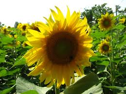

Float the image to the right:
The rose is a type of flowering shrub. Its name comes from the Latin word Rosa. The flowers of the rose grow in many different colors, from the well-known red rose to yellow roses and sometimes white or purple roses. Roses belong to the family of plants called Rosaceae. All roses were originally wild and they come from several parts of the world, North America, Europe, northwest Africa and many parts of Asia and Oceania.
Float the image to the left:
 While the vibrant, strong sunflower is a recognized worldwide for its beauty, it is also an important source of food. Sunflower oil is a valued and healthy vegetable oil and sunflower seeds are enjoyed as a healthy, tasty snack and nutritious ingredient to many foods.